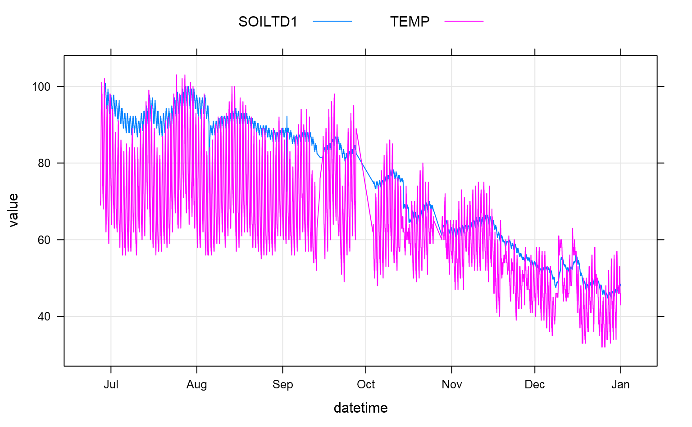

A (relatively) simple interface to the CDEC website.
CDECquery(id, sensor, interval = "D", start, end)
| id | station ID (e.g. 'spw'), single value or vector of station IDs, see details |
|---|---|
| sensor | the sensor ID, single value or vector of sensor numbers, see details |
| interval | character, 'D' for daily, 'H' for hourly, 'M' for monthly, 'E' for event: see Details. |
| start | starting date, in the format 'YYYY-MM-DD' |
| end | ending date, in the format 'YYYY-MM-DD' |
A data.frame object with the following fields: datetime, year, month, value.
Sensors that report data on an interval other than monthly ('M'), daily ('D'), or hourly ('H') can be queried with an event interval ('E'). Soil moisture and temperature sensors are an example of this type of reporting. See examples below.
Station IDs can be found here: http://cdec.water.ca.gov/staInfo.html
Sensor IDs can be found using this URL: http://cdec.water.ca.gov/dynamicapp/staMeta?station_id=, followed by the station ID.
Sensor details can be accessed using CDEC_StationInfo with the station ID.
Resevoir capacities can be found here: http://cdec.water.ca.gov/misc/resinfo.html
A new interactive map of CDEC stations can be found here: http://cdec.water.ca.gov
http://cdec.water.ca.gov/queryCSV.html
D.E. Beaudette
# \donttest{ if(requireNamespace("curl") & curl::has_internet() & require(latticeExtra) & require(plyr) & require(e1071)) { library(RColorBrewer) # get daily resevoir storage (ac. ft) from # Pinecrest, New Melones and Lyons resevoirs pinecrest <- CDECquery(id='swb', sensor=15, interval='D', start='2012-09-01', end='2015-01-01') new.melones <- CDECquery(id='nml', sensor=15, interval='D', start='2012-09-01', end='2015-01-01') lyons <- CDECquery(id='lys', sensor=15, interval='D', start='2012-09-01', end='2015-01-01') # compute storage capacity pinecrest$capacity <- pinecrest$value / 18312 * 100 new.melones$capacity <- new.melones$value / 2400000 * 100 lyons$capacity <- lyons$value / 6228 * 100 # combine g <- make.groups(new.melones, lyons, pinecrest) # resonable date scale r <- range(g$datetime) s.r <- seq(from=r[1], to=r[2], by='1 month') # better colors tps <- list(superpose.line=list(lwd=2, col=brewer.pal(n=3, name='Set1'))) # plot xyplot(capacity ~ datetime, groups=which, data=g, type='l', xlab='', ylab='Capacity (%)', ylim=c(-5, 105), scales=list(x=list(at=s.r, labels=format(s.r, "%b\n%Y"))), auto.key=list(columns=3, lines=TRUE, points=FALSE), par.settings=tps, panel=function(...) { panel.abline(h=seq(0, 100, by=10), col='grey') panel.abline(v=s.r, col='grey') panel.xyplot(...) }) ## # New Melones monthly data, retrieve as far back in time as possible new.melones.monthly <- CDECquery(id='nml', sensor=15, interval='M', start='1900-01-01', end='2015-01-01') # convert to pct. capacity new.melones.monthly$capacity <- new.melones.monthly$value / 2400000 * 100 # make a nice color ramp function cols <- colorRampPalette(brewer.pal(9, 'Spectral'), space='Lab', interpolate='spline') # plot, each pixel is colored by the total precip by year/month levelplot(capacity ~ year * month, data=new.melones.monthly, col.regions=cols, xlab='', ylab='', scales=list(x=list(tick.number=20)), main='New Melones Capacity (%)') ## # get daily precip totals from Stan Powerhouse x <- CDECquery(id='spw', sensor=45, interval='D', start='1900-01-01', end='2019-01-01') # compute total precip by year/month a <- ddply(x, c('year', 'month'), summarize, s=sum(value, na.rm=TRUE)) # convert monthly precipitation values into Z-scores by month a.scaled <- ddply(a, 'month', summarize, year=year, scaled.ppt=scale(s)) # make a nice color ramp function, scaled by the skewness of the underlying distribution cols <- colorRampPalette( brewer.pal(9, 'Spectral'), space='Lab', interpolate='spline', bias=skewness(a.scaled$scaled.ppt, na.rm=TRUE)) # plot, each pixel is colored by the total precip by year/month levelplot(scaled.ppt ~ year * month, data=a.scaled, col.regions=cols, xlab='', ylab='', scales=list(x=list(tick.number=10)), main='Monthly Total Precipitation (as z-score) SPW') ## # get pre-aggregated monthly data from Sonora RS x <- CDECquery(id='sor', sensor=2, interval='M', start='1900-01-01', end='2019-01-01') # make a nice color ramp function, scaled by the skewness of the underlying distribution cols <- colorRampPalette(brewer.pal(9, 'Spectral'), space='Lab', interpolate='spline', bias=skewness(x$value, na.rm=TRUE)) # plot levelplot(value ~ year * month, data=x, col.regions=cols, xlab='', ylab='', scales=list(x=list(tick.number=20)), main='Monthly Total Precipitation (inches) SOR') ### query an 'event' type sensor # Bryte test site (BYT) # single request: air temperature and soil temperature at depth 1 (25cm) # measurement interval is 20 minutes x <- CDECquery('BYT', c(4, 194), 'E', '2016-01-01', '2017-01-01') # data are in long format, check number of records for each sensor table(x$sensor_type) # plot grouped data xyplot(value ~ datetime, groups=sensor_type, data=x, type=c('g', 'l'), auto.key=list(columns=2, points=FALSE, lines=TRUE)) }#>#> Warning: package 'latticeExtra' was built under R version 4.0.3#>#>#> Warning: package 'plyr' was built under R version 4.0.3#> #>#> #> #>#>#> Warning: package 'e1071' was built under R version 4.0.3#> Warning: package 'RColorBrewer' was built under R version 4.0.3# }